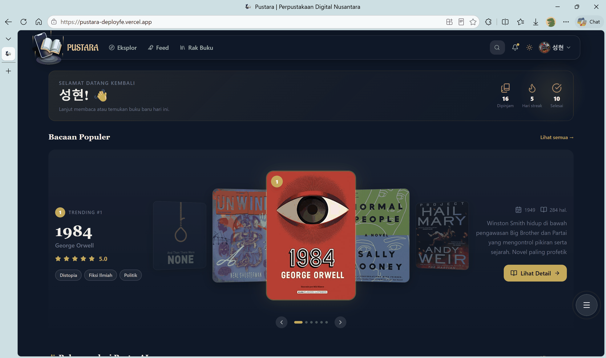
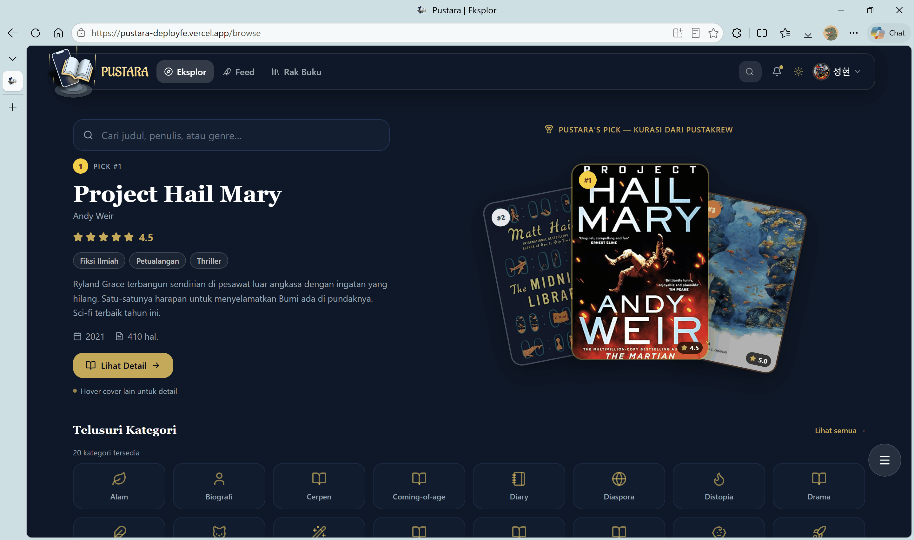
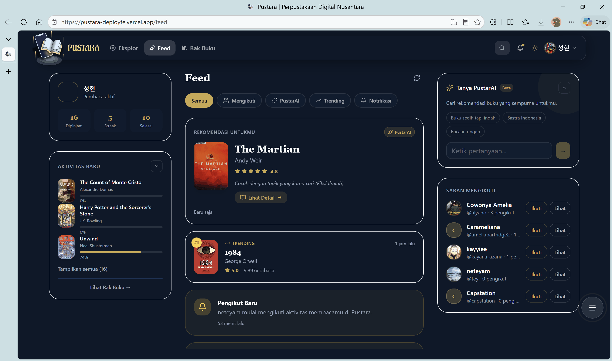
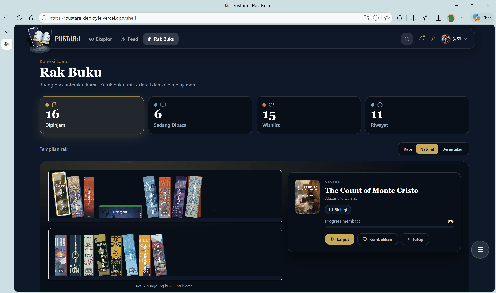
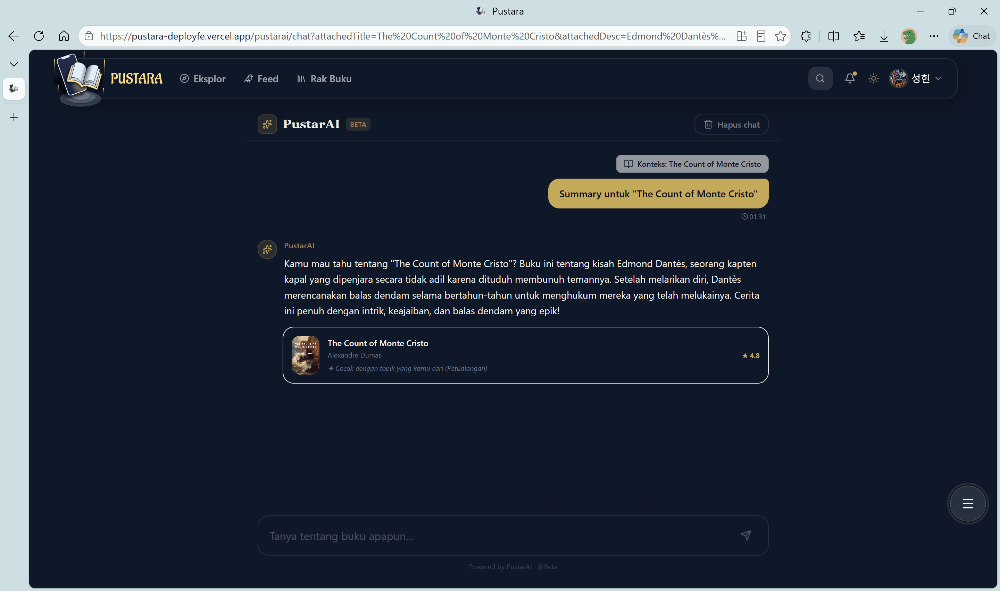
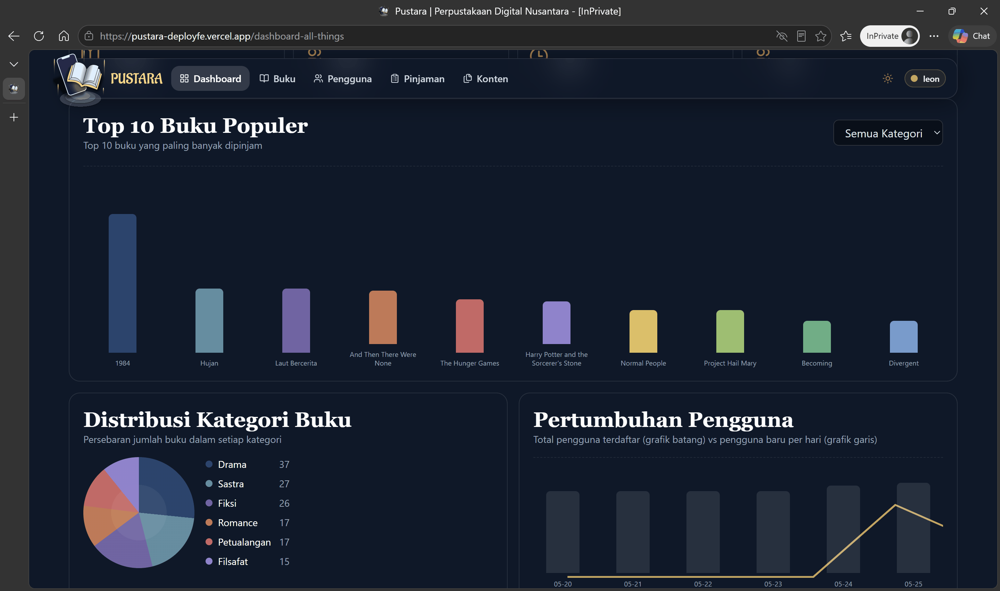

P
Pustara Frontend
Product documentation for contributors and reviewers
Next.js
React 19
Tailwind CSS
Firebase Auth
Framer Motion
Dokumentasi frontend Pustara yang merangkum produk, arsitektur, dan pengalaman pengguna secara jelas.
Halaman ini berfungsi sebagai referensi singkat untuk memahami struktur frontend, alur autentikasi, sistem UI, dan kapabilitas rilis utama Pustara.
Overview
Pustara FE adalah aplikasi utama untuk pengalaman pembaca, komunitas, dan administrasi konten.
App Router sebagai struktur utama
Seluruh route utama berada di src/app, mencakup area login, katalog, reader, komunitas, settings, dan panel admin.
Layer data dan auth
Firebase Client SDK menangani identitas pengguna, lalu token dikirim ke backend untuk verifikasi sesi dan akses data yang terlindungi.
UI yang konsisten
Visual mempertahankan tema gelap, glassy, dan elegan, dengan motion seperlunya agar tetap modern tanpa mengganggu identitas Pustara.
Architecture
Komponen inti yang membentuk frontend ini.
Routing
src/app -> pages, layouts, metadata, API routesState & auth
Zustand + Firebase Auth + protected fetch flowPresentation
Tailwind CSS, globals.css, Framer Motion, shared UIRoutes
Route map disusun berdasarkan kebutuhan pengguna dan area operasional aplikasi.
Public and auth
/catalog/auth/login/auth/register/auth/personalization
User experience
//feed/browse/browse-genre/community/notifications/popular/profile/shelf/settings/book/[bookId]/read/[bookId]/pustarai/chat
Admin workspace
/dashboard-all-things/books-management/users-management/contents-management/loans-management
API routes
/api/auth/verify-token/api/users/api/users/[uid]/api/admin/users/[uid]/api/verify-role
Flow
Alur autentikasi dan data dirancang linear agar mudah diverifikasi dan dipelihara.
01
Identity established
Pengguna login atau register via Firebase, lalu frontend menerima ID token yang valid.
02
Token verified
Token diteruskan ke backend dengan header Bearer untuk memastikan sesi, role, dan hak akses data.
03
Experience rendered
Data yang lolos verifikasi digunakan untuk merender home, katalog, reader, profil, dan admin panel.
Showcase
Cuplikan UI utama untuk menunjukkan kualitas presentasi frontend.

Home
Landing dashboard yang menonjolkan personalisasi, rekomendasi, dan entry point utama aplikasi.
Halaman utama yang menegaskan orientasi produk ke pembaca aktif.

Browse
Area eksplorasi untuk menemukan buku dengan tata letak yang tetap ringan dan konsisten.
Menjaga proses penelusuran tetap cepat dan terstruktur.

Feed
Ruang komunitas untuk aktivitas sosial, rekomendasi, dan update yang relevan.
Menyatukan interaksi komunitas dalam tampilan yang tetap terkurasi.

Shelf
Halaman koleksi pribadi untuk menyimpan dan melanjutkan bacaan tanpa kehilangan konteks.
Dirancang untuk akses cepat ke bacaan yang sedang berlangsung.

PustarAI Chat
Contoh fitur percakapan yang memperluas pengalaman membaca ke arah asisten interaktif.
Memberi lapisan interaksi tambahan untuk eksplorasi konten.

Admin dashboard
Panel operasional untuk pengelolaan user, books, contents, dan loans dengan visual yang tetap seragam.
Memisahkan tugas administratif tanpa keluar dari bahasa visual produk.
PWA
Kesiapan Progressive Web App sudah tersedia di konfigurasi aplikasi.
next.config.mjs sudah membungkus konfigurasi dengan @ducanh2912/next-pwa.
public/manifest.json tersedia untuk metadata aplikasi, ikon, dan mode tampilan standalone.
Manifest, ikon, dan konfigurasi PWA menunjukkan bahwa aplikasi sudah berada pada jalur PWA-ready.
Selama build production dijalankan, pengalaman instalasi dan penggunaan standalone dapat diaktifkan sesuai dukungan browser.